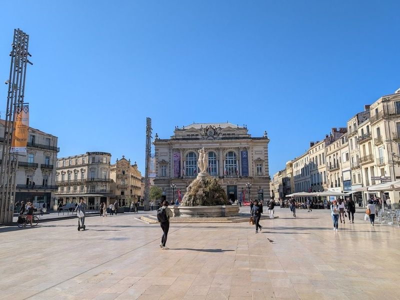
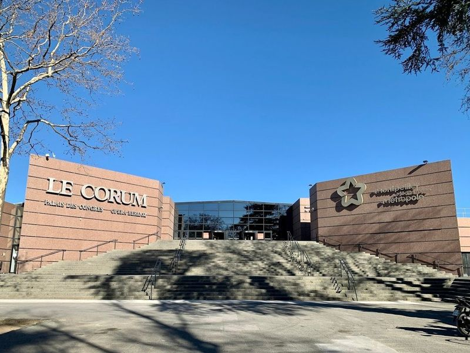
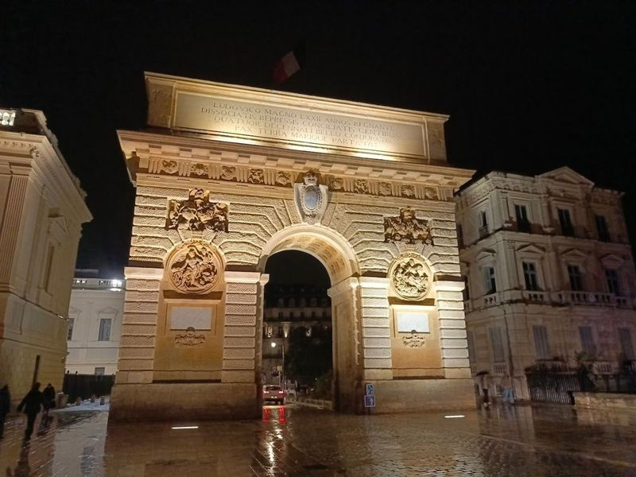
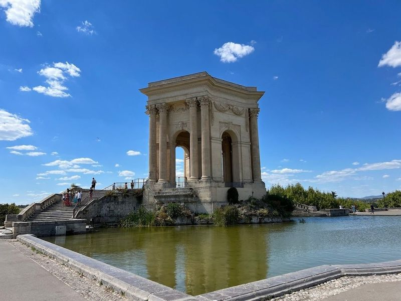
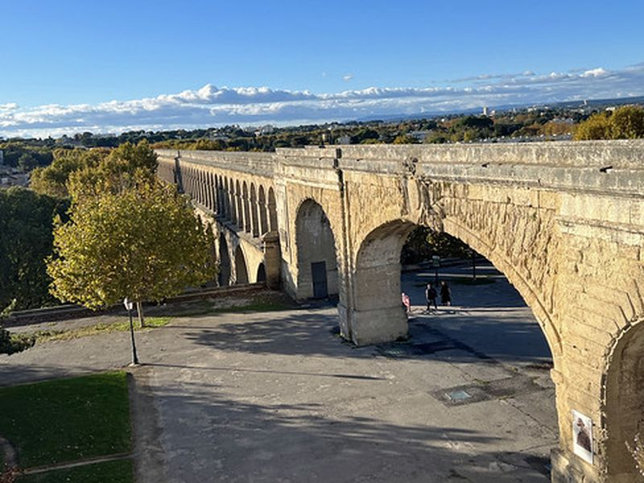
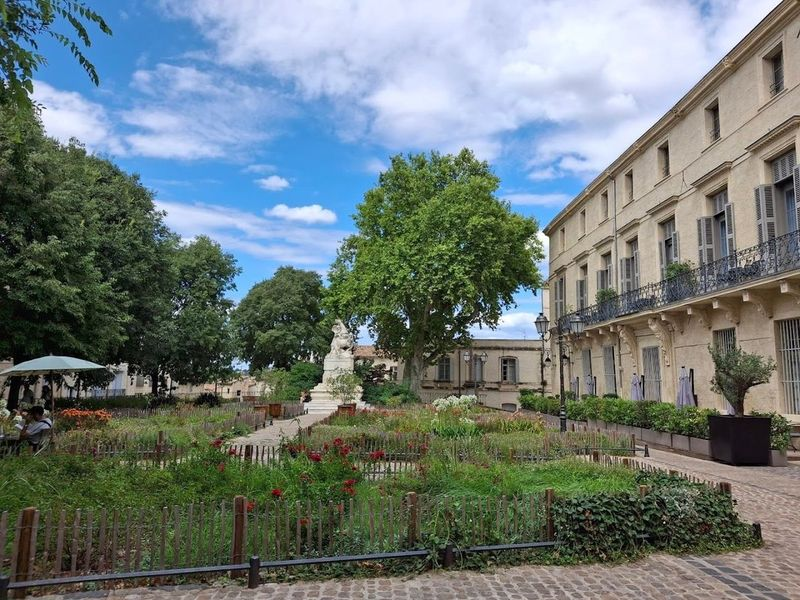
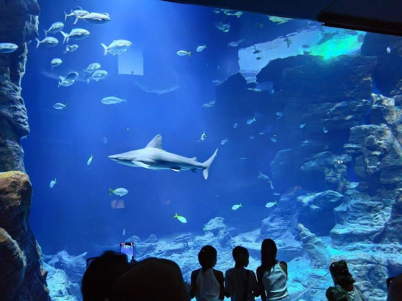
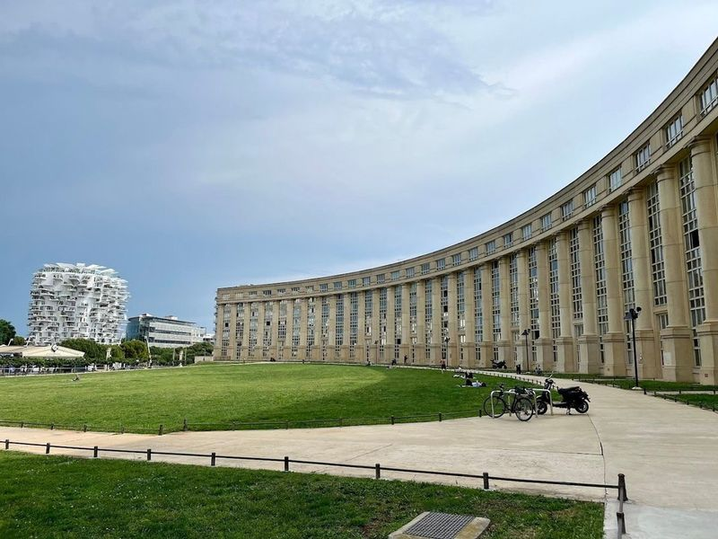
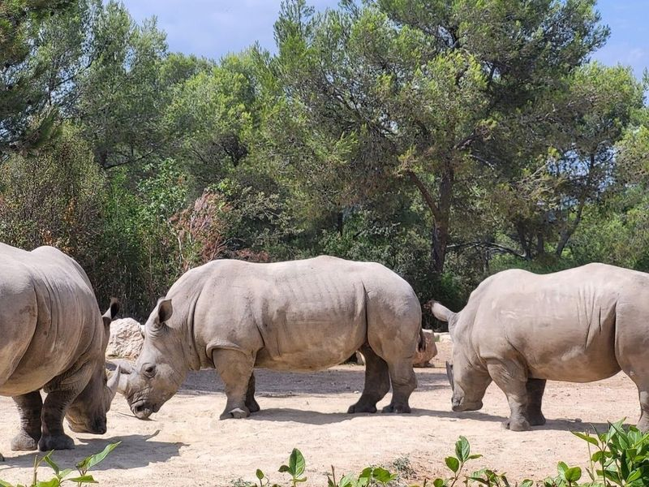
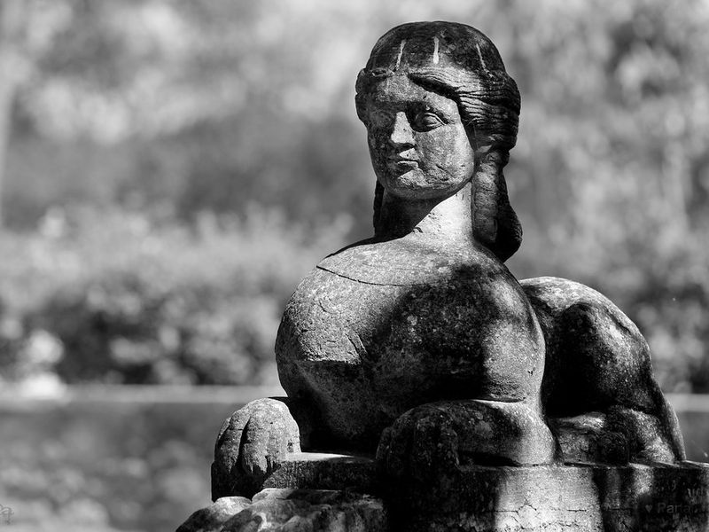

Explore Montpellier
A Brief History
Montpellier grew from a 10th-century trading settlement into a university city under medieval lords of the Languedoc. Its medical faculty, founded in the 12th century, made it a centre of Mediterranean scholarship. Baroque promenades, arcaded squares, and 19th-century expansion toward the coast reflect how regional commerce, Protestant-Catholic conflict, and modern French civic planning reshaped the Hérault capital.
Attractions Map
Top Sights & Activities

Place de la Comédie
Place de la Comédie is a spacious pedestrian plaza surrounded by historic buildings, offering outdoor cafe seating and street performances. The area boasts grand art nouveau architecture reminiscent of Paris, alongside medieval structures dating back to the 1500s and 1600s. Just a short distance away, modern architectural marvels like L'Arbre Blanc and Philippe Starck Cloud provide a striking contrast.

Le Corum
Le Corum is a versatile and picturesque building in Montpellier, offering views of the city. It hosts various events, from concerts to international magic shows, with comfortable seating and spacious auditoriums. The venue is also well-equipped for conferences, featuring large halls for poster sessions and excellent media systems. Additionally, it provides diverse room types suitable for different event sizes.

Arc de Triomphe
Montpellier's Arc de Triomphe, also called the Porte du Peyrou, crowns the Promenade du Peyrou where rue Foch meets the royal square. Completed in 1693 to designs linked with François d'Orbay, the limestone arch celebrates Louis XIV with relief panels of his victories. It frames views over the esplanade, the equestrian statue of the Sun King, and the Aqueduc Saint-Clément beyond.

Promenade du Peyrou
Promenade du Peyrou, also known as the Royal Square of Peyrou, is a picturesque city square in Montpellier. It features an impressive equestrian statue of Louis XIV and offers views of the city and the Arc de Triomphe. The area includes a castle-like building with Corinthian pillars designed by Henri Pitot, as well as a well-preserved Roman aqueduct.

Aqueduc Saint-Clément
The Aqueduc Saint-Clément carried water to Montpellier from the 18th century, feeding fountains on the Promenade du Peyrou. The stone arches cross the Lez valley below the triumphal arch and statue of Louis XIV. The structure remains part of the city's historic hydraulic network.

Place de La Canourgue
Place de La Canourgue is a charming and elegant square located in L'Ecusson, the oldest part of Montpellier. Surrounded by 17th-century aristocratic mansions and leafy trees, it exudes a romantic garden-like atmosphere. The square offers a taste of sophisticated ambiance and is perfect for a leisurely stroll with family or friends. Visitors can enjoy the lovely cafes and restaurants as well as the picturesque view towards Pic Saint Loup.

Planet Ocean Montpellier
Planet Ocean World, located in Montpellier's Port Marianne, is a modern aquarium and interactive marine museum that offers an immersive experience into the world of ocean life. Visitors can explore over 400 diverse species, including sharks, penguins, stingrays, and coral reefs from various aquatic habitats such as the Mediterranean and Polynesia. The complex also features a storm simulator and a planetarium for an all-encompassing exploration of the deep sea and the universe.

Esplanade de l'Europe
Esplanade de l’Europe, designed by Ricardo Boffil, is a contemporary-themed open space in Montpellier. It features a semi-circular building and offers direct access to the River Lez. The area includes a large lawn, bars, and restaurants, making it perfect for strolling or enjoying a coffee at a cafe. With picturesque views from every corner and no cars around, it's an ideal spot for photography and leisurely walks on sunny days.

Zoo de Montpellier
Montpellier Zoological Park, established in 1964 on the historic estate of Henri de Lunaret, is a haven for wildlife enthusiasts. With over 1100 animals from 128 species, including lions and giraffes, the zoo sits adjacent to a nature reserve along the Lez River. The lush Amazonian greenhouse, La Serre Amazonienne, offers an immersive experience with diverse plant life.

Château d'O
The Château de Flaugergues, sometimes called Château d'O, is an 18th-century folly house east of Montpellier with formal gardens and vineyards. The mansion preserves family furnishings and Flemish tapestries. Terraced parterres and an orangery overlook the surrounding plain toward the Mediterranean.